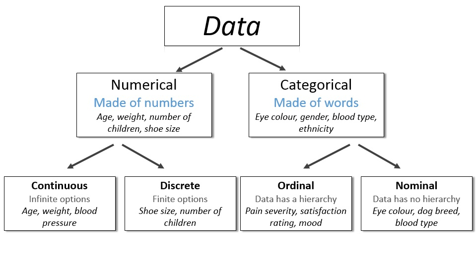
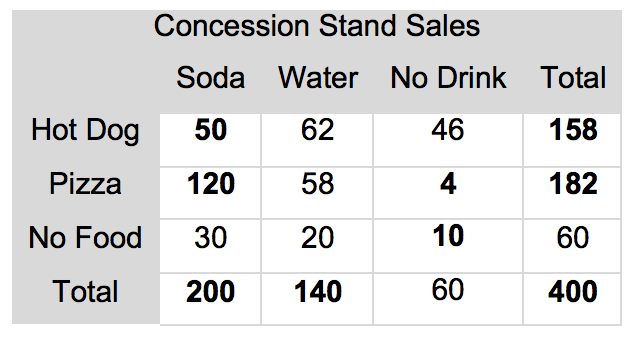
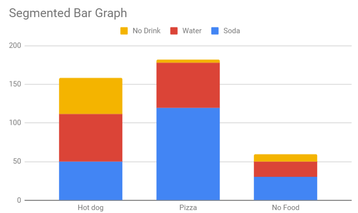

Topcis
- Exploring Data
- Data sets contain information about individuals (such as people, animals, or things)
- Each individual contains variables that describe them (height, gender, eye color)
- Variables are categorical if it has a label (gender, hair color, age range)
- Variables are quantitative if it has a numerical value (weight, age, height)
- 
- Analyzing Categorical Data
- A distribution of a categorical variable can tell you the frequency (100/500 people have brown hair) or the relative frequency (20% of people have brown hair)
- Pie charts and bar graphs can display the distribution of a categorical variable.
- A two way table organizes data about two categorical variables for the same individuals.
- The marginal distribution is one of the categorical variables over the total number of individuals. It looks at a single variable
- \Large\frac{200\text{ Soda}}{400\text{ Total}}, \Large\frac{158\text{ Hot Dog}}{400\text{ Total}}
- The conditional distribution compares the value of one variable to the value of another
- \Large\frac{62\text{ Water & Hot Dog}}{140\text{ Total Water}}
- 
- The marginal distribution is one of the categorical variables over the total number of individuals. It looks at a single variable
- A segmented bar graph or a side by side bar graph can be used to display conditional distributions
- 
- Displaying Quantitative Data with Graphs
- dotplots, stemplots, and histograms show the distribution of a quantitative variable
- Shape, center, and spread describes the overall pattern.
- Outliers shows departures from the pattern.
- Some distributions are symmetric, left-skewed, or right-skewed
- Describing Quantitative Data with Numbers
- The mean and median describe the center of a distribution.
- The standard deviation and IQR are measures of spread
- The mean and standard deviation should only be used with roughly symmetric distributions
Formulas
\LARGE
\bar{x}=\frac{\sum x_i}{n}
\\[20pt]
\LARGE
S_x=\sqrt{\frac{\sum (x_i-\bar{x})^2}{n-1}}
\\[35pt]
\LARGE
IQR = Q_3 - Q_1
\\[20pt]
\LARGE
\text{outlier} = Q_{-1/+3} \pm (1.5*IQR)